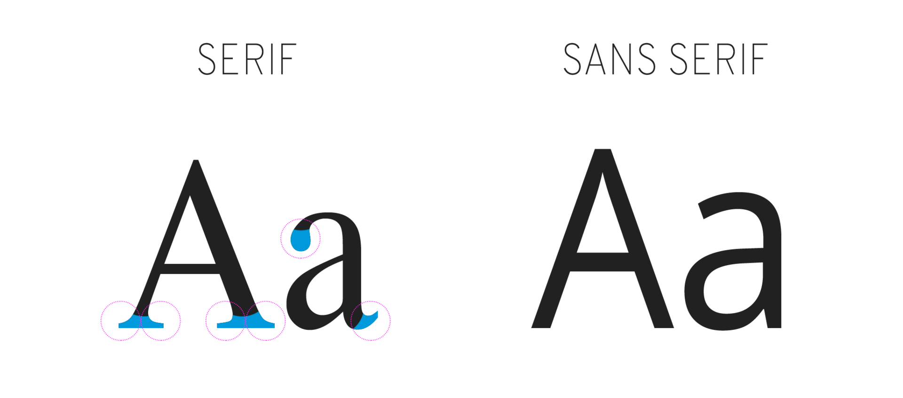
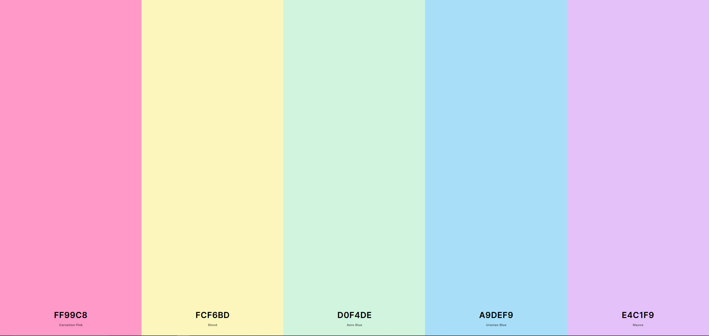

Fonts for websites can be provided by the computer that renders the website itself,
by the browser that you're using or by an external resource, such as
Google Fonts.
The most common fonts for web safe use can be found
here.
However, the recommended fonts for working on minimalistic and elegant websites at
the moment are those of the
Sans Serif family.
This is due to the fact that sans-serif fonts lack the touches and finishes at the
end of each letter that sans has, thus giving it a more elegant look.

Note the differences at the ends of each letter.
Colors
When thinking about color, the most important thing should be visual appeal
and readability of the website. No one is gonna visit a pretty website that's
impossible to read.
A great tool for choosing color pallets can be found at
Coolors.

For example, this is the color palette that my first paying
client ever sent me. She's also my aunt, but that's neither here nor there.
Styles
This section is pretty much a filler by this point,
but nevertheless, it's important to remember.
There are many styles applicable to html and css websites. However, one should
always remember to use the box model and the flow of html code in order to modify
it.
Using headings h1 to h6 in order to determine the order of importance for elements
within a page is crucial not only for SEO purposes, but also for how you write your
css code later on. You're gonna have a much better time when you can write css rules
applicable to headings in the order that you want them, instead of relying on classes
and identifiers for every single rule.
Lastly, here's a caption of the box model so future Luis can actually remember how
it works.
Always remember that using the box-sizing: content-box rule in
css will reset all box sizes to what you set as height and width, so no more
armchair arithmetics.
Dog
I got tired of writing, so here's a picture of my dog, Jamila.
Nevermind her tag, it's provisional